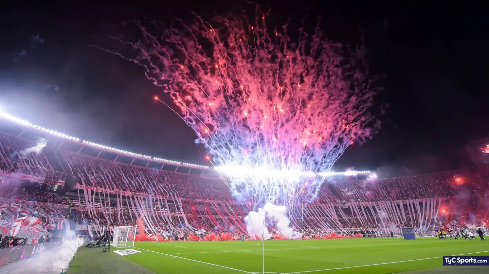
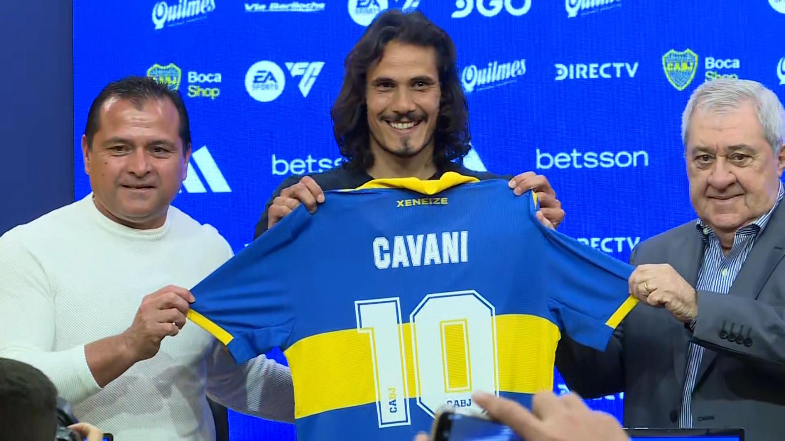
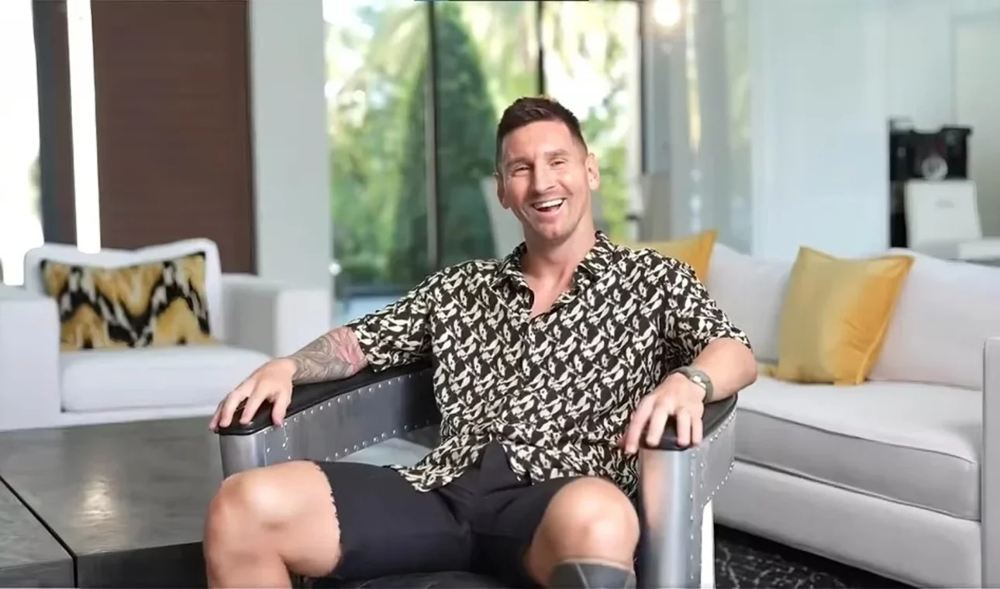
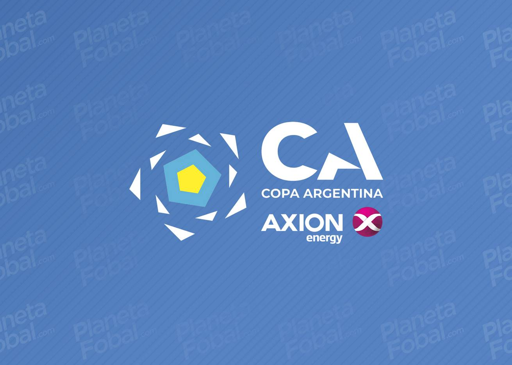
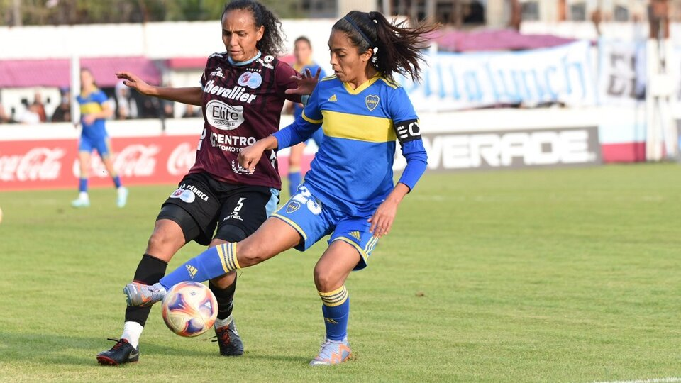

LA ENTREVISTA COMPLETA DE LIONEL MESSI CON MIGUE GRANADOS: FRASES, VIDEOS Y MÁS
La entrevista de Migue Granados a Lionel Messi en Miami tuvo más de 250.000 espectadores sintonizando en simultáneo. La charla salió al aire pasadas las 11 de la mañana, y se vio en vivo por el programa Soñé que Volaba, en los canales de streaming de OLGA en Twitch y YouTube. Seguí la jornada en directo por LIGANET...
Leer más...

